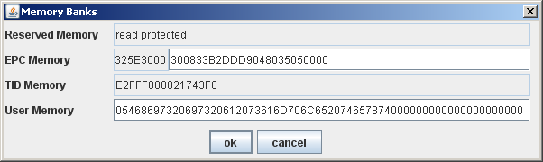

Changed HardwareAbstraction interface to remove inconsistencies and add new features. Most methods are affected. The changes can be divided into following categories:
The HAL has moved from a module of Fosstrak Reader to an own project. It is subdivided into a module containing the HardwareAbstraction interface with common utilities and modules with implementations of the interface. Each implementation module contains one or more reader controllers of a reader manufacturer or the simulator.
A HardwareAbstraction implementation for the Impinj Speedway reader has been added. The controller implements nearly all methods of the interface: identify (mandantory), readBytes, writeBytes, writeId, reset, kill, asynchronous identify and parameters. Not supported is shutting down and starting up a read point and getting read point noise level. Some parameters of the reader can be read and set using the getParameter and setParameter methods:
See th Impinj Mach1 protocol specification for information about functionality and format of the parameters.
A HardwareAbstraction implementation for FEIG OBID i-scan ID ISC.MR101-A has been added. The controller implements identify (mandantory), readBytes, writeBytes, reset and kill commands.
The implementation supports the FEIG OBID i-scan ID ISC.ANT.MUX multiplexer with 8 ports. Multiplexers can be cascaded up to a depth of three. This allows a maximum of 512 antennas on a single reader.
A HardwareAbstraction implementation for FEIG OBID i-scan ID ISC.LRU1000 has been added. The controller implements identify (mandantory), readBytes, writeBytes, reset and kill commands.
All configuration files have been changed to XML format instead of a mix of XML and properties. This increases consistency and XML allows a hierarchical structures which is more readable for complex configurations.
Resource loading has been completely redesigned. This fixes 1547832.
There were several issues with the previous implementation of resource loading:
The new implementation fixes these issues in the following way:
See the Fosstrak Reader Developer Changlog for a more detailed explanation of the new implementation of the resource loading.
Changed the tag memory layout of the simulated tag to match the EPCclass1Gen2 standard. The simulated tag now has 64 bit reserved memory, 256 bit EPC memory including CRC and PC bits, 64 bit TID memory with random 32 bit serial number and 256 bit user memory.
An EPCTransponderModel class has been added to represent many different EPCclass1Gen2 tags in software. It provides memory layout information for following tag chips:
These are the most common tag chips also used in tags from other manufacturers. New tag chips can simply be added by writing their TID and memory information to a configuration file. Thereafter they are fully accessible by all reader controllers using the EPCTransponderModel. A default EPCTransponderModels configuration file containing TID and memory description for the tags listed above is shipped with the Fosstrak HAL.
The user interface of the graphic simulator has been extended with the possibility to read and write the memory banks of a simulated tag.
The memory banks can be easily accessed through the context menu of a simulated tag.

With the changed HardwareAbstraction interface, the Observation returned by the identify method can contain a TagDescriptor for each tag observed. It contains information about the ID type and memory layout of the tag. All current implementations (Impinj and FEIG readers) including the simulator add a TagDescriptor with according information to the Observation.